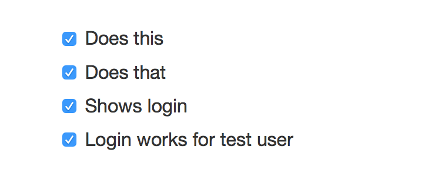

Tests
Ghosts
Ghost Tests
Jake
Programmer
Story
Sad Story
The time I was attacked by an army of ghosts for not writing tests
Lessons Learned
1. Make sure you pass continuous integration
1. Make sure you pass continuous integration
or else you will become a skeleton
2. Make sure you have 100% code coverage
2. Make sure you have 100% code coverage
or else you will become a skeleton
3. Make sure you spend 80% of your time writing tests
3. Make sure you spend 80% of your time writing tests
or else you will become a skeleton
But actually
I'm not a skeleton
I'm just fine
Sometimes it feels like
I should be writing more tests
and I feel guilty
but I don't know why I'm doing it
guilt
guilt
guilt
shame
shame
shame
skeleton army
writing tests is hard
It takes a lot of time
when you could be writing applications
when you could be answering emails
when you could be finding clients
So why write tests?
maybe you've always written tests
maybe you've never written tests
Why and how to unit test
Time travel and growth and regression
Young
"I'll talk to you in the future through my tests"
- Young Hahn
Bottle up what you know about your code
And make sure that it holds true every time someone makes a change
"They're like me sitting around a project telling you about different parts of it."
"Except unlike me, tests are not a finite resource."
Scale
"To me it's a way to be generous to others and to respect and protect our time as a team."
Emily
"How I work with somebody who is learning X"
- Emily McAfee
Start with tests
"Most people are already familiar with articulating desired outcomes..."
"... do it in English and then turn those expectations into code, together."
Ryan
"Tests or it didn't happen"
- Ryan Clark
"Tests are your proof to the rest of the world that your code works."
Does he really mean that?
Yes
He for sure does
Why?
Every line of code matters
Even if it's not broken today
Untested code could break tomorrow
Without anyone knowing
Regression
The Worst
It used to work
It used to work
but now it doesn't
How do you prevent regression?
How do you really busy people with no time to write tests prevent regression?
Let's start simple
Written release checklist
I love checklists
Simplest for of tests

Guarunteed to reduce regressions
Measure twice cut once
Test twice release once
But it doesn't scale
Automate
Visual comparison
Visual comparison
Videos of test runs
Visual comparison
Videos of test runs
No code required
Run on every release
Run on every release commit
But this also doesn't scale
Becomes very repetitive very quickly
Extract shared components and test them rigorously
functions.php
Create plugins with separate repos and controlled tests
Test twice
Release once
But I'm not a php developer
I'm a javascript developer
write modules
write modules
test modules
But regressions can still happen
2 unit tests
2 unit tests
0 integration tests
Impossible to test everything
Difficult to test edge cases
Many more Important things
Mocking
BDD
TDD
Frameworks
Cross-browser
Code coverage
Headless browsers
Performance testing
But what's the most important thing?
Testing comes down to culture
Testing comes down to trust
People naturally dislike tests
But tests are how you can scale your team, and scale yourself
"How am I scaling?"
"We can stay small but win big if every project, every bugfix, every decision can be maintained not by us but by snapshots of us"
- Young
Stay scrappy
Stay scrappy
Write tests
Don't get attacked by the skeleton army
Questions?